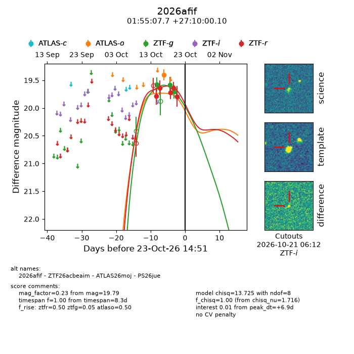
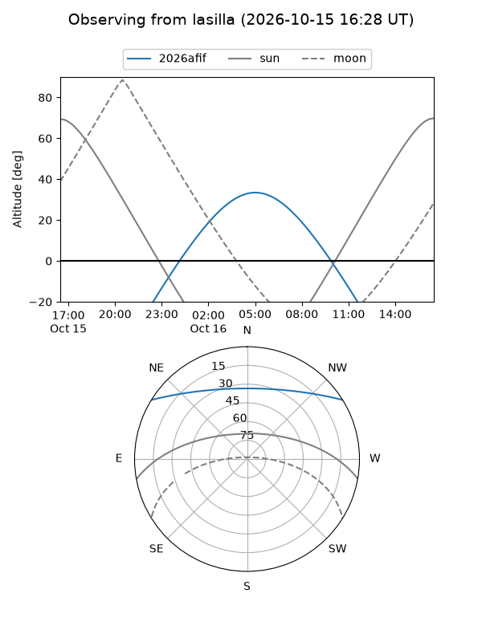
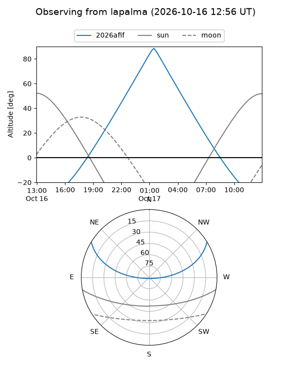
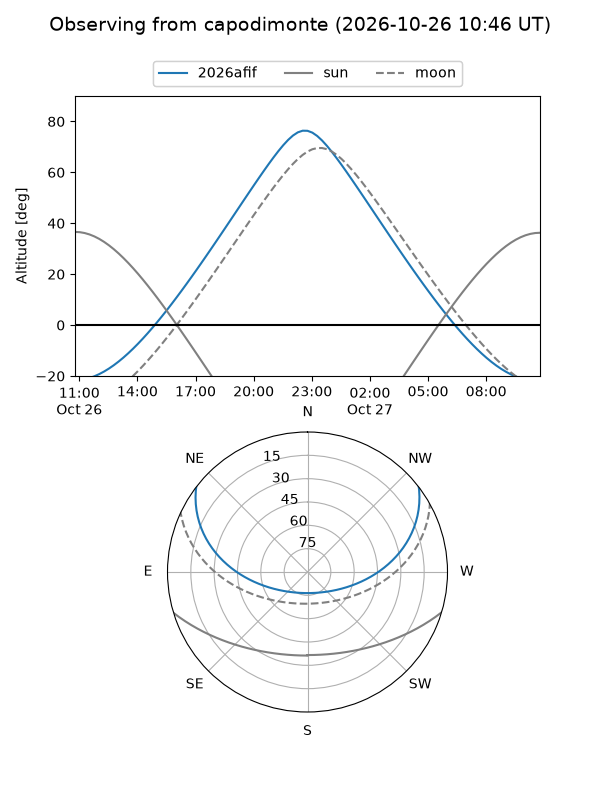
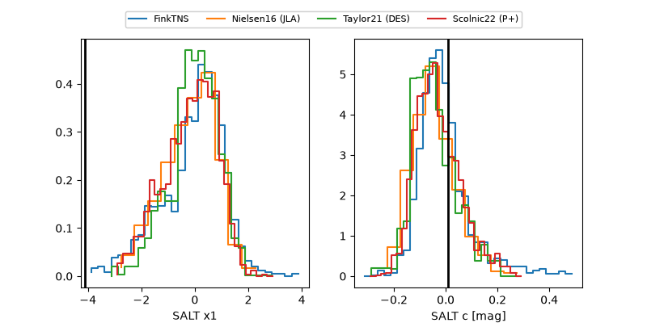

2026afif
Target 2026afif at 2026-10-23 14:54
Aliases and brokers:
FINK-ZTF: ztf.fink-portal.org/ZTF26acbeaim
Lasair-ZTF: lasair-ztf.lsst.ac.uk/objects/ZTF26acbeaim
ALeRCE-ZTF: alerce.online/object/ZTF26acbeaim
YSE-PZ: ziggy.ucolick.org/yse/transient_detail/2026afif
TNS name: wis-tns.org/object/2026afif
Direct TNS query: direct search
alt names
ZTF26acbeaim (ztf,fink_ztf)
2026afif (tns,yse)
ATLAS26moj (atlas)
PS26jue (panstarrs)
Coordinates:
equatorial (ra, dec) = 28.7822,+27.16669
equatorial (HMS+DMS) = 01:55:07.73,+27:10:00.10
galactic (l, b) = (139.9695,-33.58911)
Flags:
peak dt: +6.9
Photometry:
last atlaso=19.40, ztfg=19.71, ztfr=19.79
1 atlaso, 3 ztfg, 5 ztfr detections
Lightcurve

Visibility



Additional plots
